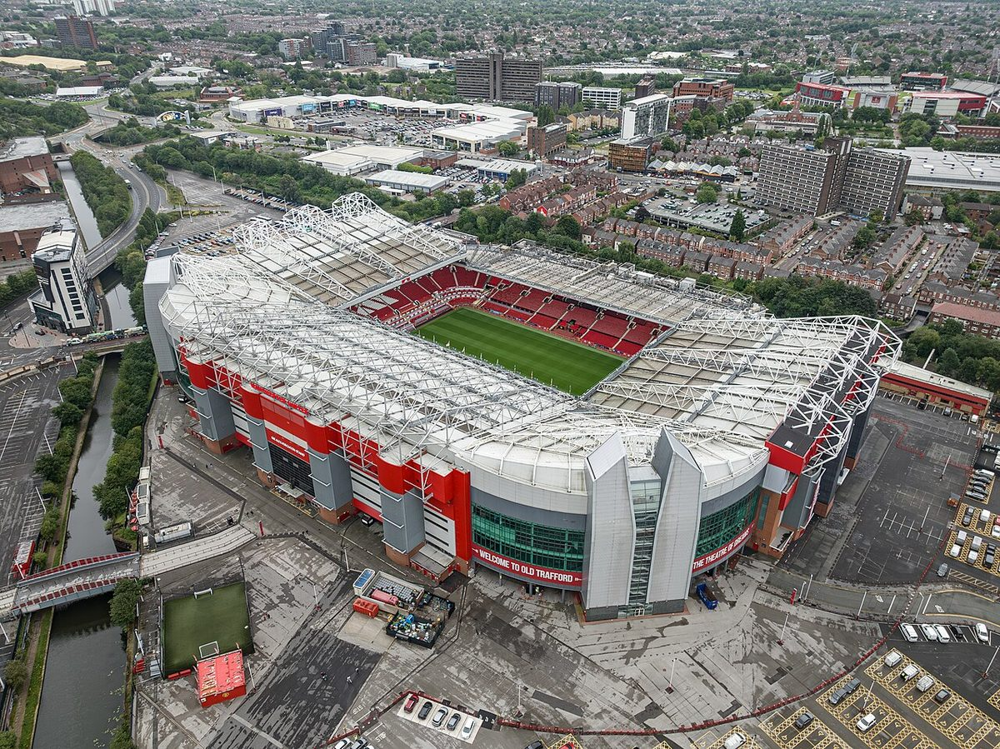
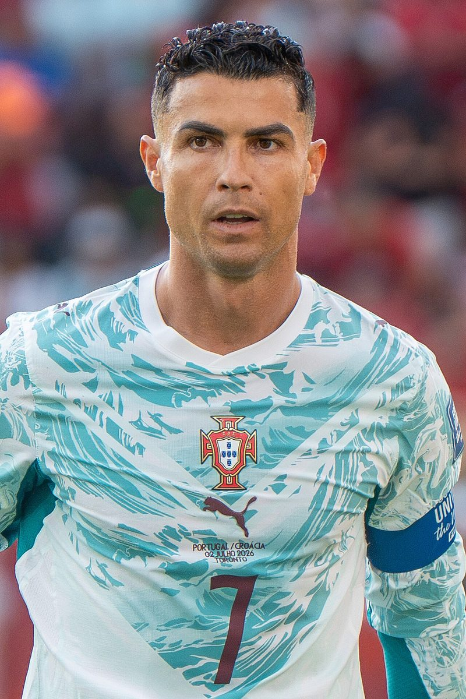

Футбол

Камбоджийская премьер-лига: клубы сильнее, трибуны пусты. Как растить болельщиков — разбор по каждому клубу
Камбоджийские клубы побеждают в Азии, но в среднем на матч лиги приходит около 1300 зрителей. Данные по всем 11 клубам, подъём «Ангкор Тайгер» в Сиемреапе и опыт Японии и Таиланда показывают, что может сделать каждый клуб.

«Ляонин» впервые выиграл женскую Суперлигу Китая за тур до конца
Ничья 1:1 с «Пекином» дома в Шэньяне принесла титул — через год после того, как «Ляонин» упустил его в последнем туре в матче с тем же соперником.

Англия вдесятером обыграла Испанию 3:2 в Мадриде и заняла первое место в группе Лиги наций
Кейн, Конса и Уайт забили до удаления Эллиота Андерсона, и англичане удержали победу, прервав 43-матчевую беспроигрышную серию Испании.

Япония обыграла Бразилию 3:2 в Сингапуре, забив победный гол в добавленное время
Тацухиро Сакамото забил на 91-й минуте после того, как дубль Винисиуса Жуниора позволил Бразилии сравнять счёт; Карло Анчелотти и Рафинья были удалены.

Вьетнам U23 сыграл вничью с Катаром и без поражений выиграл Gia Lai VTV Cup
Нгуен Минь Там сравнял счёт сразу после перерыва в Плейку и принёс хозяевам очко, которого хватило для титула.

Индия U17 разгромила Гуам 12:0 и возглавила группу в отборе Кубка Азии
Капитан Даллалмуон Гангте сделал хет-трик в первом тайме в Куала-Лумпуре; дальше Индию ждёт Палестина, у которой тоже шесть очков.

«Манчестер Юнайтед» назначил Маурисио Почеттино после увольнения Майкла Каррика
Бывший тренер «Тоттенхэма» и «Челси» подписал контракт до 2029 года и приступит к работе 18 ноября, завершив дела в сборной США.

Гол вышедшего на замену Бао Лонга принёс Вьетнаму U23 победу над Сингапуром — до титула на VTV Cup один шаг
Вьетнам выиграл 1:0 в Плейку, одержал вторую победу подряд и в субботу может стать чемпионом, сыграв вничью с Катаром.

Дубль Пио Эспозито помог Италии обыграть Францию 3:1 — первое поражение Зидана
Италия отыгралась на «Сан-Сиро» и по личным встречам возглавила группу A1 Лиги наций за тур до конца группового этапа.

«Кристал Пэлас» уволил Пьера Сажа после 16 матчей
Команда замыкает турнирную таблицу АПЛ, а руководство клуба ведет переговоры с Томасом Франком.

Хет-трик Гангте принёс сборной Индии U17 волевую победу над Сингапуром — 4:2
Капитан забил три мяча в Куала-Лумпуре, и Индия отыгралась в стартовом матче группы E отбора на Кубок Азии U17 2027 года.

Александр Головин и Наиль Умяров пропускают ноябрьский сбор сборной России
Главный тренер Валерий Карпин подтвердил кадровые проблемы: национальная команда готовится к товарищеским матчам в Ташкенте.

Дубль Фудзино вдохновил «Манчестер Сити» на волевой разгром в Монце и первую победу в Лиге чемпионов
Команда Андре Йеглерца пропустила первой, но забила четыре мяча «Интеру», дав передышку лидерам перед суперматчем чемпионата.

«Манчестер Юнайтед» переманивает Маурисио Почеттино на фоне неизбежного увольнения Майкла Каррика
Боссы манкунианцев настаивают на смене главного тренера: команда опустилась на 18-е место в АПЛ.

Десятилетие футбола Юго-Восточной Азии: что помогло лидерам и что сдерживает остальных
Данные по 11 сборным, семи лигам и их клубам показывают, почему вперёд вышли Таиланд, Вьетнам и Индонезия, где находятся Сингапур и Малайзия и какие проблемы должна решить каждая страна, включая Камбоджу.

Сборная Бразилии прилетела в Сингапур на последние матчи 2026 года против Японии и Сингапура
Молодая команда Карло Анчелотти проведёт два товарищеских матча на Национальном стадионе в рамках турнира The Kallang Football Series, начав с повторения матча чемпионата мира против Японии 14 ноября.

Новая Зеландия всухую разгромила Самоа и вышла в финал женского Кубка мира по регбилиг
Хет-трик Стейси Ваака принес сборной Новой Зеландии победу над соперницами со счетом 32:0 в полуфинале в Ньюкасле.

Четыре гола за 17 минут: ПСЖ разгромил «Вильярреал» 6:0, фавориты Лиги чемпионов отрываются
«Пари Сен-Жермен» и «Реал Мадрид» — единственные команды с четырьмя победами в четырёх матчах. Ближе всех к ним «Арсенал», «Комо» и «Барселона».
Ма Сяосю снова творит историю: как женская сборная Китая U-17 впервые дошла до четвертьфинала чемпионата мира
ФИФА высоко оценила работу бывшей обладательницы «Золотого мяча» в ее первый год на посту главного тренера: победы над США и Францией и обиднейший гол от Бразилии на 87-й минуте.

«Чудо» Кёйта: «Фенербахче» дважды отыгрался и обыграл «Ливерпуль» 3:2
Всего на второй неделе в роли исполняющего обязанности главного тренера бывший нападающий «Ливерпуля» Дирк Кёйт увидел, как Ведат Мурики забил головой победный гол в ворота его бывшего клуба в Стамбуле.

«Ланс» — «Комо» — 1:9: дебютанты Лиги чемпионов повторили самую крупную победу в истории турнира
В своем первом же сезоне в Лиге чемпионов «Комо» забил девять мячей на чужом поле: хет-трик на счету Тасоса Дувикаса, а Нико Пас отдал две голевые передачи. Команда поднялась на четвертое место в таблице.

Клубы из Камбоджи шумят в Азии: «Пномпень Краун» и «Свайриенг» в Лиге чемпионов АФК 2
Позади четыре тура, и обе камбоджийские команды идут в зоне плей-офф, одержав победы в Корее и Сингапуре и отобрав очки у «Шанхай Шеньхуа».

Криштиану Роналду прощается со сборной Португалии: легендарная «семерка» уходит в историю
Спустя 23 года, 146 голов и триумф на Евро, 41-летний форвард завершает карьеру в национальной команде, закрывая одну из самых ярких глав в истории футбола.

Японец Кодзо Тасима бросит вызов Джанни Инфантино на выборах президента ФИФА
Бывший президент, а ныне почётный президент Японской футбольной ассоциации хочет привнести в мировой футбол «искренность, честность и высокие этические стандарты» японского футбола.